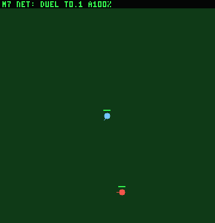
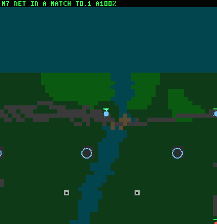

Treadcore · LAB-REPORT-BRAIN.md section 102 · 27 October 2026
Seven nets, each the kept result of one stage of training, watched in short clips, put through nine single-decision tests, dropped into real matches, and read by the census. What each one learned, what it costs to run, and where it still falls short of the scripted brain it trains beside.
Each clip is the net on its own defining test, on the first held-out seed it passes, so it shows what the net can do; the untrained net is shown on its first seed. Blue is the learner and its drones, red the enemy, orange the shells with their landing marked, cyan the learner's interceptors. The bar over the tank is its armour.


Nine short tests, each on open grass with nothing else on the map, each asking one decision. Every brain plays the same 200 seeds. The cell is the share passed; below it, the median reaction time (the first shot, the first move, or the first interceptor, as the test times it).
Green deepens with the share passed. A dash: that reaction never came.
Seat 9 of a dealt 16-seat match (a ranger whom nobody follows) given to each net, the scripted ranger in the same seat on the same 40 seeds, first 3 minutes.
The two measures pull apart. The untrained net lives as long as the scripted ranger because it does almost nothing (11 damage dealt). Phase 1 and 3 nets fight (54 and 49) and die three times in three minutes. The survival maps moved the map 7 net toward the corner the scripted ranger holds, to 0.82 deaths, at the cost of half its damage. The scripted ranger does both: 0.33 deaths and 63 damage.
A team of five nets in one team's seats against the scripted defaults, 110 seeds, 11 maps, three matches a seed; zero is the scripted brain.
The map 7 net is the first to climb off the bottom: +3.96 ± 0.53 over the map 4 net, with four times the kills a match (3.7) and two fewer deaths (16.6 of 20). It is level with a random net, so its rule (two errors above random) fails. The census asks the most of a net: the whole game, supply, capture, building and teams, none of which a net does yet.
The learned tank did not get a world of its own. It trains inside the one the scripted brain (the "brainz": the Commander, its team board and 110 census-tuned weights) was built and measured in, and every tool made for the scripted brain became a tool for training it:
Observation and Commands as any bot[reward] and a net seat| Measure (Apple M1) | Result |
|---|---|
| One decision: 143 senses and the forward pass, 16,431 weights, one thread | 10.6 µs (94,000 a second) |
| Decisions a second a tank in play | 5 (every 0.2 s) |
| A one-tank training episode (drive in and kill a still enemy) | 2.1 ms |
| A 16-seat match, every seat a net: brains a seat-tick / the world a tick | 10.9 µs / 80 µs; 197× real time |
| The same match, every seat scripted | 13.3 µs / 69 µs; 177× real time |
| Phase 1, 500 generations of 1,164 episodes (8 threads) | 130 s, about 4,500 episodes a second |
| Map 7 with rehearsal, 400 generations of 2,037 episodes | 705 s |
| Every clip on this page, drawn in Rust and packed by ffmpeg | 8 s |
The net is cheaper to think than the scripted brain, and the world's own step is most of a match's cost either way. No GPU is involved: training is as fast as the CPUs can play episodes.
| Improved, and held | Not yet |
|---|---|
| Go to a target (999 of 999); drive in and kill with the gun (999 of 999); take a guarded depot (94 to 99%); go home when low (99.7%); dodge a shell (96%); survive low and far from home (44%, scripted 53%); deaths in a match halved (1.73 to 0.82); the first census climb (+3.96) | A duel won (0%); outnumbered (16%); terrain (G9 0%); the last 3% of the dodge; damage dealt in a match (27, scripted 63); the census above a random team; shortcuts (G5, G6) that each training map hid |
Every gain was measured on seeds no generation trained on; every loss is in the same tables. The next stage is set by them: gauntlet items G5 and G6 become training maps against the shortcuts, map 8 and the duel get the drones, and the census is read again on the same seeds.
make gauntlet # 9 tests x every net, 200 seeds: build/train/gauntlet.tsv make clips # these GIFs: build/train/clips/ make train CHECK=nets/map7.bin MATCH=40 # one seat in 40 real matches make train GROUND=phase1,phase3,scenarios/training/04-the-guarded-depot.toml START=nets/phase3.bin CENSUS_NET=nets/map7.bin SEEDS=110 make census